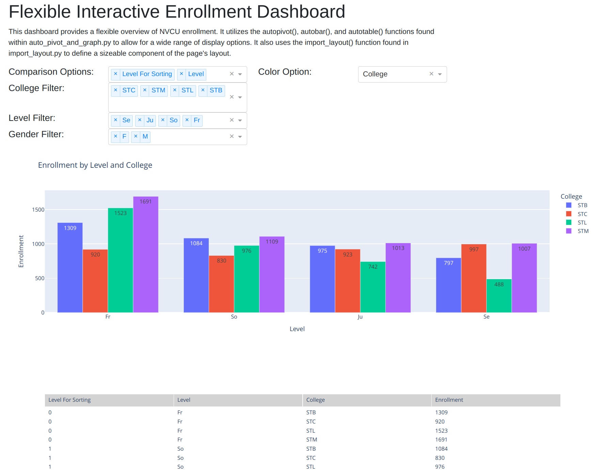

PFN Dash App Demo#
Readme#
Note: For more background information on this section of Python for Nonprofits, Dash Apps, and Google Cloud deployment steps, visit the corresponding readme within Online_Visualizations/Simple_App_Without_Login. (Items explained within that readme often won’t be discussed here.)
Visit https://pfndashappdemo-ymc7cs3r5q-uc.a.run.app/ to view the Google Cloud Run-hosted version of this app. (If no one has accessed the app recently, it will take several seconds to load, as the app is set to run on demand in order to save costs.)
This project demonstrates how to use Dash to create various types of interactive online visualizations; these range from simple charts to more complex interactive setups. Both the Flask-Login and Dash-Pivottable libraries are featured within this project.
The Fixed Dashboard (https://pfndashappdemo-ymc7cs3r5q-uc.a.run.app/fixed_dashboard) page shows a very simple dashboard setup that lacks user-defined filter and comparison settings.

The Simple Interactive Dashboard (https://pfndashappdemo-ymc7cs3r5q-uc.a.run.app/simple_interactive_dashboard) page displays a relatively straightforward interactive enrollment dashboard. This dashboard didn’t require much code to write, but its functionality is rather limited.

The Flexible Survey Results (https://pfndashappdemo-ymc7cs3r5q-uc.a.run.app/flexible_survey_results_dashboard) and
Flexible Enrollment (https://pfndashappdemo-ymc7cs3r5q-uc.a.run.app/flexible_enrollment_dashboard) dashboard pages
allow for a wide range of comparison and color options. These options are
made possible by the autopivot() and autobar() functions found within
auto_pivot_and_graph.py (kburchfiel/pfn). (You may also find these functions useful for
developing standlone Plotly charts.)
The Flexible Enrollment Dashboard also makes use of an import_layout()
function (stored within import_layout.py (kburchfiel/pfn))
in order to reduce the amount of code needed to define
the page’s structure and menu options. In addition, this dashboard
applies the autotable() function in auto_pivot_and_graph.py to display
a tabular view of the data featured in the graph.

The dash-pivottable library makes it very easy to create interactive dashboards. Examples of this library in use can be found within the Dash Pivottable (Enrollment) (https://pfndashappdemo-ymc7cs3r5q-uc.a.run.app/dash_pivottable_enrollment) and Dash Pivottable (Survey Results) (https://pfndashappdemo-ymc7cs3r5q-uc.a.run.app/dash_pivottable_survey_results) pages.

Development notes:#
I made use of a standalone Jupyter notebook (notebook_for_testing.ipynb, available at kburchfiel/pfn) to test out code before integrating it into my Dash app files.
The source data is imported from GitHub. A more realistic approach would retrieve data from an online database; however, that would cause this project to incur a monthly database hosting expense.
Project structure#
The files and folders in this app are arranged as follows:
(Folders have ‘/’ suffixes.)
pages/
—-home_page.py
—-fixed_dashboard.py
—-simple_interactive_dashboard.py
—-flexible_survey_results_dashboard.py
—-flexible_enrollment_dashboard.py
—-dash_pivottable_enrollment.py
—-dash_pivottable_survey_results.py
templates/
—-login.html
auto_pivot_and_graph.py
data_import.py
import_layout.py
Procfile
readme.md [this file]
requirements.txt
Development and setup notes#
Some of the code in this folder was derived from jinnyzor’s post at https://community.plotly.com/t/dash-app-pages-with-flask-login-flow-using-flask/69507/38 . Jinnyzor wrote regarding that post at (https://community.plotly.com/t/dash-app-pages-with-flask-login-flow-using-flask/69507/55) that “this is free to use, no license.” I am very grateful to jinnyzor (and to Nader Elshehabi (naderelshehabi/dash-flask-login)) for allowing us to use their code!
Some code also derives from that found in the Dash Pages documentation (https://dash.plotly.com/urls).
Steps for hosting this Dash app (with Flask-Login functionality) on Google Cloud Run#
Most of the deployment steps written within the Simple_App_Without_Login readme apply here as well, with the following exceptions:
I used the following requirements.txt values (to reflect the libraries used within this app):
dash==3.0.0
dash-bootstrap-components==2.0.0
dash-pivottable==0.0.2
Flask==3.0.3
Flask-Login==0.6.3
gunicorn==23.0.0
pandas==2.2.3
plotly==6.0.1
Werkzeug==3.0.6
Note: I specified the exact versions of each library within this file because, when updating the app after Dash 3 got released, I found that an earlier version of Dash was being used within my cloud-hosted app. (I think this explains why data within certain graphs was not appearing correctly.) To resolve this issue, I:
Created a new Conda environment just for this app
Used pip to import each library within my requirements.txt file (since pip would also be used to add libraries to the cloud-hosted app)
Confirmed that the local app was working correctly
Copied the version numbers for each locally-hosted library into my requirements.txt file
Redeployed the app–which, thankfully, now worked fine
It’s worth highlighting that, whereas the app within the Simple_App_Without_Login folder contained the line
server = app.server(as indicated by the deployment guide at https://dash.plotly.com/deployment), this app will instead useserver = Flask(__name__)due to the incorporation of Flask-Login.